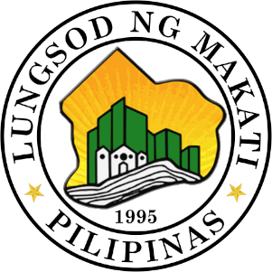

Number of Visits:
Did You Know?
Demographics
Within the municipalities in Metro Manila, Makati ranks 9th with a population of 629 616 as of the 2020 census. More than 80% identify as Roman Catholic. According to the 2004-2014 Transport and Traffic Improvement Plan, the daytime population of the city is estimated to be 3.7 million on weekdays due to the large number of people who come for work, business, or exploration.
Even though the huge population provides enough skilled labor force, this influx puts pressure to the city causing high traffic along its major roads.
Economy and Infrastructure
The city stands as the richest local goverment unit in the Philippines in terms of income from local sources and per capita basis. At the end of 2012, it had 62,000 business enterprises registered. Makati also has the highest number of BPO offices in Metro Manila and the highest number of PEZA-accredited IT Parks and Buildings.
Ayala Avenue
Ayala Avenue traverses the Makati Central Business District. This major road was named after the Ayalas who were a key in the development of the area.
Photo courtesy of Patrickroque01 under CC BY-SA 4.0 License
Guadalupe Catholic Church
With majority of its population as Roman Catholics, many colonial-era churches still stand today. One of which is the Guadalupe Catholic Church.
Globe Event Grounds - Circuit
Many events are held in this Globe Event Grounds or more often called The Circuit, Makati. With its spacious fields, large organizations have held assemblies, concerts and other big events here.
University of Makati
The Makati Government is well-known for its support in the education sector. Many of its citizens, also known as Makatizens, are highly educated people. Some of the institutions that have branches in the city include Ateneo de Manila University, De La Salle University, Far Eastern University, and Centro Escolar University. The University of Makati offers higher education courses such as engineering and law.
Photo courtesy of Elmer B. Domingo under CC BY-SA 3.0 License
Pasig River
The Pasig River bounds the city of Makati to the North. This river has been a major thoroughfare in the history of the country, connecting the cities through its course. A ferry in Guadalupe transports its citizens to major points in Metro Manila.
Photo courtesy of Patrickroque01 under CC BY-SA 4.0 License